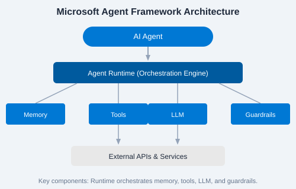

The Microsoft Agent Framework (MAF) is a set of SDKs, runtimes, and cloud services for building, deploying, and managing intelligent AI agents. Agents are autonomous or semi-autonomous programs that use large language models (LLMs) to reason, execute tools, maintain memory, and interact with users and systems.
Core Architecture
Every MAF application has four layers:
Agent — the AI entity with instructions, memory, and tools
Orchestrator — manages the agent lifecycle, turn-taking, and multi-agent handoffs
Runtime — execution environment that coordinates LLM calls, tool execution, and state
Channels — user-facing interfaces (Teams, web chat, custom apps)

Key Concepts
Concept
Description
Agent
An AI-powered entity that can reason, act, and respond
Memory
Persistent storage of conversation history and user context
Tool
Functions that agents can invoke (APIs, DB queries, calculators)
Orchestrator
Coordinates multiple agents and handoffs between them
Guardrails
Safety and compliance policies applied to agent inputs/outputs
Why MAF?
Deep integration with Microsoft ecosystem (Azure, Teams, Copilot)
Built-in support for memory, tools, and multi-agent orchestration
Enterprise-grade governance, security, and observability
Open SDK model — works with any LLM provider
💡 Key Insight: Agents differ from traditional chatbots by maintaining state, executing actions, and autonomously deciding which tools to call.
✏️ Exercise: Write down three real-world problems you could solve with an AI agent. For each, list: (1) what data it would need, (2) what tools it would call, and (3) what memory it should preserve.